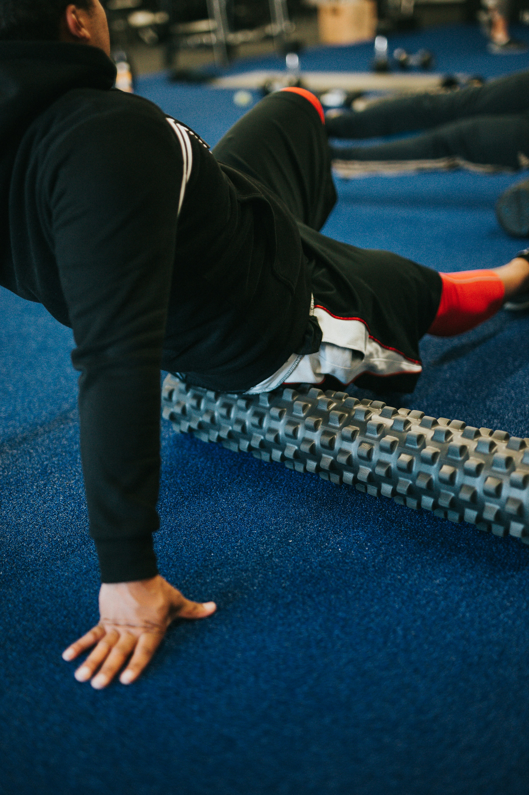

Refuel
After a long run it is important to replenish your body so that you can get back to feeling strong and healthy. Carbohydrates and proteins are among the most important nutrients needed for the body when it comes to long-distance running. These nutrients must be prioritized to get the most out of replenishing your body.
Carbohydrates are mainly used to fuel the body and they are the main source of energy when it comes to running. Some examples of foods with high amounts of carbohydrates are bread, potatoes, rice, oats, fruits, and vegetables.
Proteins are not burned for energy but they are used for repairing and building muscles which is crucial for improvement. Some examples of foods with high amounts of protein are eggs, chicken, nuts, peanut butter, and beans.
Hydration
When you run, naturally, you get hot because your muscles are all working constantly causing your blood to flow more rapidly. This increased blood flow and temperature needs to be countered which is why you sweat. When you sweat you lose water along with electrolytes like sodium, potassium, and magnesium. It is important to replenish these because they aid in the transportation of nutrients to the muscles in the body.
By simply drinking more water and including electrolyte consumption in your diet you can significantly increase recovery and performance.
Stretching and Foam Rolling
Although stretching before your run is important, it is equally as important to stretch after as well. Stretching before a run can prevent injury and help your run go much smoother. Stretching after a run is very important because it can relax tight muscles, push blood to the muscles, and even help with the mobility of some of your joints.

Foam Rolling is also a great way to aid your muscle recovery. It can break up knots and alleviate tightness in the muscles. It also increases blood flow to the muscles that you roll out. This is because it applies pressure that squeezes the blood vessels, forcing blood to move through them.
Rest
If you are training 7 days a week having a rest day here and there is crucial. Without rest, it is significantly more difficult to improve. Having a rest day every so often can allow your body to recover significantly which can lead to a faster pace during workouts and in turn, more improvement.
Sleep is also incredibly important when it comes to long-distance running. Your body does most of its recovery during sleep so it is important to get an adequate amount of it. Make sure the sleep is quality as well because the quality of your sleep is just as important as the amount of it.